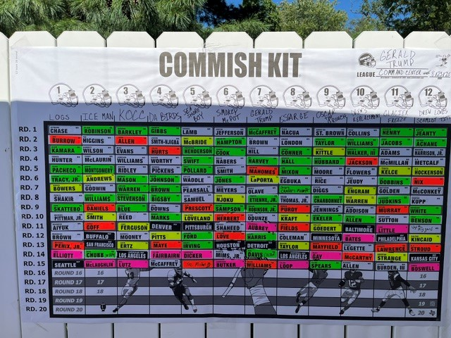
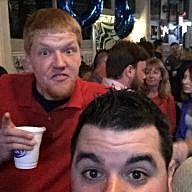
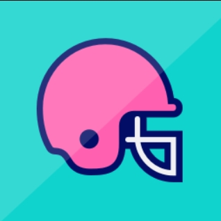
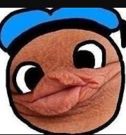
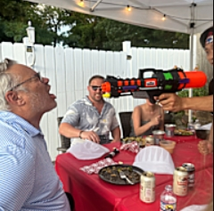
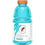
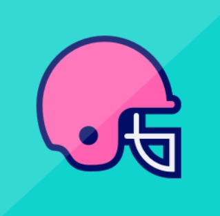
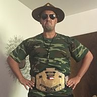
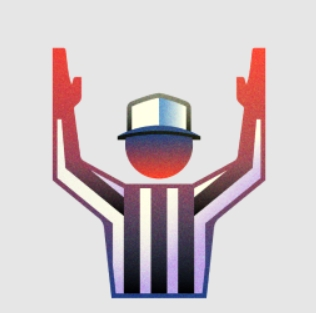

12-Team Yahoo Fantasy Football League
This League is CutthroatThe draft lottery will determine the order in which managers select their draft position. The lottery winner will have the first choice of any of the twelve (12) available draft positions. The manager who finishes second in the lottery will then choose from the remaining draft positions, followed by the third-place finisher, and so on until all draft positions have been selected.
The Commissioner will notify managers via text message when it is their turn to select a draft position. Each manager will have one (1) hour from the time the text is sent to make their selection.
If a manager does not respond within one hour, the selection opportunity will pass to the next manager in the lottery order. Managers who are skipped may still select a draft position later, but only from the draft positions that remain available at the time they respond.
Keepers must come from Round 3 or later. First- and second-round selections are ineligible.

Covering draft grades, sleeper picks, power rankings, matchup previews, trade rumors, and league intelligence for the upcoming week.
| Season | Champion |
|---|---|
| 2025 | Glennie |
| 2024 | Colton |
| 2023 | Kevin |
| 2022 | Drew |
| 2021 | Glenn |
| 2020 | Jerry |
| 2019 | Drew |
| 2018 | Drew |
| 2017 | Jerry |
| 2016 | Drew |
| 2015 | Glenn |
| 2014 | Kyle |
| 2013 | Glennie |
| 2012 | Sarge |
| 2011 | Sarge |
| 2010 | Kyle |
| 2009 | Jerry |
| 2008 | Drew |
| Team Name | W-L-T | PF | |
|---|---|---|---|
 |
OscarTheGrouch | 0-0-0 | 0.00 |
 |
Da Birds | 0-0-0 | 0.00 |
 |
Sea Shore Boys | 0-0-0 | 0.00 |
 |
Grade B+ | 0-0-0 | 0.00 |
| Gerald Trump | 0-0-0 | 0.00 | |
 |
Glacier Freeze | 0-0-0 | 0.00 |
| Iceman | 0-0-0 | 0.00 | |
 |
Smokey McPot | 0-0-0 | 0.00 |
 |
Sarge | 0-0-0 | 0.00 |
| Dixon Drews Face | 0-0-0 | 0.00 | |
| Logs 2.0 | 0-0-0 | 0.00 | |
 |
Seepy Burns | 0-0-0 | 0.00 |